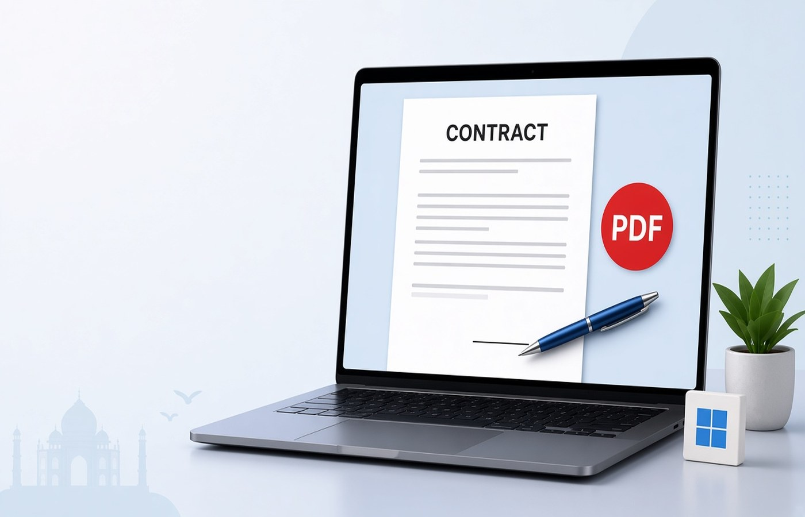

A freelance contract usually arrives as a PDF in mail: scope, fee, dates, and a signature block on the last page. Signing it by photographing the laptop, or by printing and scanning a crooked page, gives the client a file that is hard to archive. On Windows you can read the pages, place your signature on the block that names you, and save a dated copy without losing the unsigned original. Do this for a contract you intend to accept. Do not copy someone else's signature onto a page, and do not change the fee after they sent the file. If a number is wrong, ask for a revised PDF.
Read the file before you sign
Open every page, including annexures the mail called optional. The signature line often says you have read the payment terms and the end date. Check the client legal name, your name, the currency, and whether GST is extra or included if the draft mentions tax. If a clause is missing or the figure does not match the mail thread, reply and wait for a new PDF. Signing and then arguing about a number you could see is a weak position. Save the unsigned file as Client-Contract-unsigned.pdf so you still have what they sent.
Watch for a password on the draft. Some companies lock the PDF and send the password in a second mail. Use that password. If you do not have it, ask the sender. Do not try to strip the lock to get a file you were not meant to open. After it opens, confirm you are on the latest version. A draft from last week may still sit in Downloads with a similar name. Check the date in the footer before you sign.
Put the signature on the right block
Use a signature image you created yourself, or draw the signature in the desktop tool, and place it only on the line that belongs to you. If there is a date line, type the date you are actually signing. Do not backdate it to match a project that already started unless the contract text says the start date is earlier and the signature date is today. Leave the client's block empty if they sign second. Do not sign in their box by mistake. Initials on each page only if the draft asks for initials.
Keep the signature large enough to see and small enough to stay inside the block. A signature that covers the fee line looks like an edit. Preview at 100 percent. If the PDF has a form field, fill that field rather than drawing beside it, so the value stays with the form. Save the signed file under a new name. Do not overwrite the unsigned original. You will want both if a dispute later asks what the draft said before signatures.
- Sign only your own block
- Date the day you sign, unless the draft says otherwise
- Do not cover amounts with the signature image
- Save a new file and keep the unsigned PDF
Name it so the client can file it
A useful name includes the client, the word signed, and the date, such as Northwind-SOW-signed-2026-09-24.pdf. Use hyphens, not a second file called contract final. Send that PDF, not a screenshot and not a photo of a printed page. Screenshots lose annexures. In the mail, say which version you signed in one short line. If they need a scan of a witness page, add that page only when the draft includes it. Do not invent a witness.
If both sides must sign, wait for their signed copy and store that as the final file with a later date in the name. Keep your earlier signed copy too. Replacing files in a hurry is how the unsigned draft gets mailed back as if it were complete. Zip nothing unless they asked. A single PDF is what most Indian clients drop into their vendor folder. Say in the mail which date you signed.
Keep a local set after you send it
Make a folder per client and put the unsigned PDF, the signed PDF, and the statement of work mail in it. When they send a change order, repeat the same habit: new file, new date, old file untouched. Pdf Buddy can place the signature, fill a date, and save on the PC. The contract does not need to pass through a random signing website that keeps a copy of your client list. Work locally, then attach the PDF to the mail thread you already have with them.
If you later need a copy for a payment follow-up, send the signed PDF again from this folder. Do not rebuild the signature from memory on a different draft. And if the client asks you to alter a signed fee, ask them to issue a revised contract. Changing a number on a signed page yourself is not a desktop editing convenience. It is a different document from the one they agreed to.
Questions people actually ask
Can I sign by typing my name in a script font? You can if the contract accepts a typed signature and you place it on your block. Many Indian clients still expect a drawn signature that matches how you sign a bank form. Either way, save a new PDF, keep the unsigned file, and do not sign the client's block.
The draft is password protected. How do I sign it? Open it with the password the client already sent, place your signature, and save a new file. If you never received the password, ask them to resend it. Do not remove a lock you do not know the password for.
Should I send a photo of the signed last page only? Send the full signed PDF. A photo of the last page drops the scope and the fee pages, and the client cannot file it as the contract. Keep page order the same as the draft they sent you. Annexures belong in that same file.
Sign the contract on your PC and mail the new PDF from the same thread. Pdf Buddy, by Easy Peeze Tools, is a Windows desktop PDF editor that works on the PC. The draft is not uploaded to a random website. The free tier is 2 files a day. Pricing starts at ₹149. See the download page.